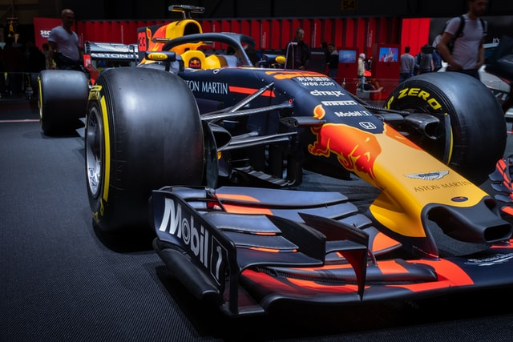
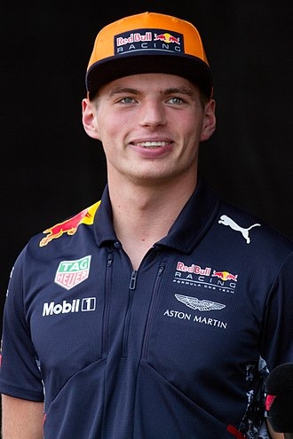
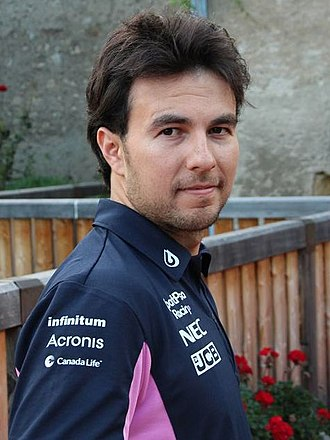

Red Bull Racing

Red Bull Racing, also simply known as Red Bull or RBR and competing as Oracle Red Bull Racing, is a
Formula One racing team, racing a Honda-built Red Bull powered car under an Austrian licence and based
in the United Kingdom. It is one of two Formula One teams owned by beverage company Red Bull GmbH, the
other being Scuderia AlphaTauri (previously Scuderia Toro Rosso). The Red Bull Racing team has been
managed by Christian Horner since its formation in 2005.[6]
Red Bull had Cosworth engines in 2005 and Ferrari engines in 2006. The team used engines supplied by
Renault between 2007 and 2018 (from 2016 to 2018, the Renault engine was re-badged "TAG Heuer" following
the breakdown in the relationship between Red Bull and Renault in 2015).[7][8] During this partnership,
they won four successive Drivers' and Constructors' Championship titles from 2010 to 2013, becoming the
first Austrian team to win the title.[9] The team began using Honda engines in 2019.[10] The works Honda
partnership culminated in 2021 following Red Bull driver Max Verstappen's World Drivers' Championship
victory. Honda will continue to supply complete engines from Japan to Red Bull and AlphaTauri until the
end of 2025.[11]
read more....
Drivers

Max Verstappen
Max Emilian Verstappen (born 30 September 1997) is a Belgian-Dutch racing driver and the 2021 Formula
One World Champion. He competes under the Dutch flag in Formula One with Red Bull Racing. He is the son
of former Formula One driver Jos Verstappen.
At the 2015 Australian Grand Prix, when he was aged 17 years, 166 days, he became the youngest driver to
compete in Formula One. Verstappen was granted the Super Licence and raced in Formula One before being
able to legally drive a road car in his native Netherlands. After spending the 2015 season with
Scuderia Toro Rosso, Verstappen started his 2016 campaign with the Italian team before being promoted to
parent team Red Bull Racing after four races as a replacement for Daniil Kvyat. At the age of 18, he won
the 2016 Spanish Grand Prix on his debut for Red Bull Racing, becoming the youngest-ever driver and the
first Dutch driver to win a Formula One Grand Prix. After winning the 2021 Abu Dhabi Grand Prix,
Verstappen became the first Dutch driver to win the Formula One World Championship, and the 34th Formula
One World Drivers' Champion.
read more...
Drivers

Sergio Perez
Sergio Michel Pérez Mendoza; born 26 January
1990, nicknamed "Checo", is a Mexican racing driver who races in Formula One for Red Bull Racing,
having previously driven for Sauber, McLaren, Force India, and Racing Point. He won his first Formula
One Grand Prix at the 2020 Sakhir Grand Prix, breaking the record for the number of starts before a race
win at 190. He also earned his first Formula One pole position at the 2022 Saudi Arabian Grand Prix,
breaking the record for the most races before a first pole position at 215.
read more...